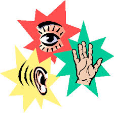

Concrete Random No More!
Since Phase 0 started, I’ve been so worried on catching up on the material and understanding it that I’ve ignored the fact that I have a concrete random thinking style. Looking back, I’ve been rushing myself so I haven’t had time to play around and experiment with code as much as I would like to. I know that if I start to follow my thinking and learning style a bit more, I will understand the material quicker.
One of the hardest things for my during Phase 0 has been the reflections. It’s kind of frustrating to know that it’s super easy for some of the other students, yet it’s usually the last thing I get done. I thought it was funny when I looked back at what’s hard for concrete random learners, formal reports or showing how they got an answer, yeah that hits the nail on the head. I think the ‘keeping detailed records’ goes hand in hand with the lack of comments in my code.
I want to make those things easier for me, and the only way is through practice. As much as it’s comforting to be in a ‘Thinking Style’ group, I want to not have it there for a fallback and excuses. I want to broaden the way I learn, try new ways, see what works and what doesn’t for me and not just follow my results for the test. Now’s the time for me to be able to do this. I want to be able to go into DBC Phase 1, and to be able to adapt to any situation with ease. Being able to solve a problem from multiple angles and being able to pair with multiple different thinking styles.